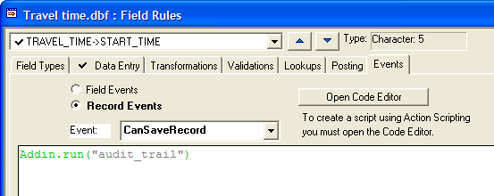

Using the Audit Trail Feature
Alpha Five writes out an ASCII file which is an audit trail of all changes made to a record. The audit trail shows the date and time of the change, the original value in the field, and the new value in the field.
To turn on the audit trail feature, you put the command: Addin.run("audit_trail") in the record's CanSaveRecord event. Also, if you want to keep track of deleted records, put Addin.run("audit_trail_deleteRecord") in the record's CanDeleteRecord event.

In this case the data is saved in a file named TRAVEL TIME- audit_trail.txt in the same directory as the database.
|
New Record number :230 Entered on: 10/23/2003 at: 09:41:52 ---------------------------------------------------------------------------------------------------- TRAVEL_TIME->DATE New value: 10/24/2003 TRAVEL_TIME->START_TIME New value: 07:00 TRAVEL_TIME->EXIT_4_TIME New value: 07:20 TRAVEL_TIME->EXIT_3_TIME New value: 07:25 TRAVEL_TIME->EXIT_2_TIME New value: 07:28 TRAVEL_TIME->OFFICE_TIME New value: 08:00 TRAVEL_TIME->WEATHER New value: Sunny ==================================================================================================== |